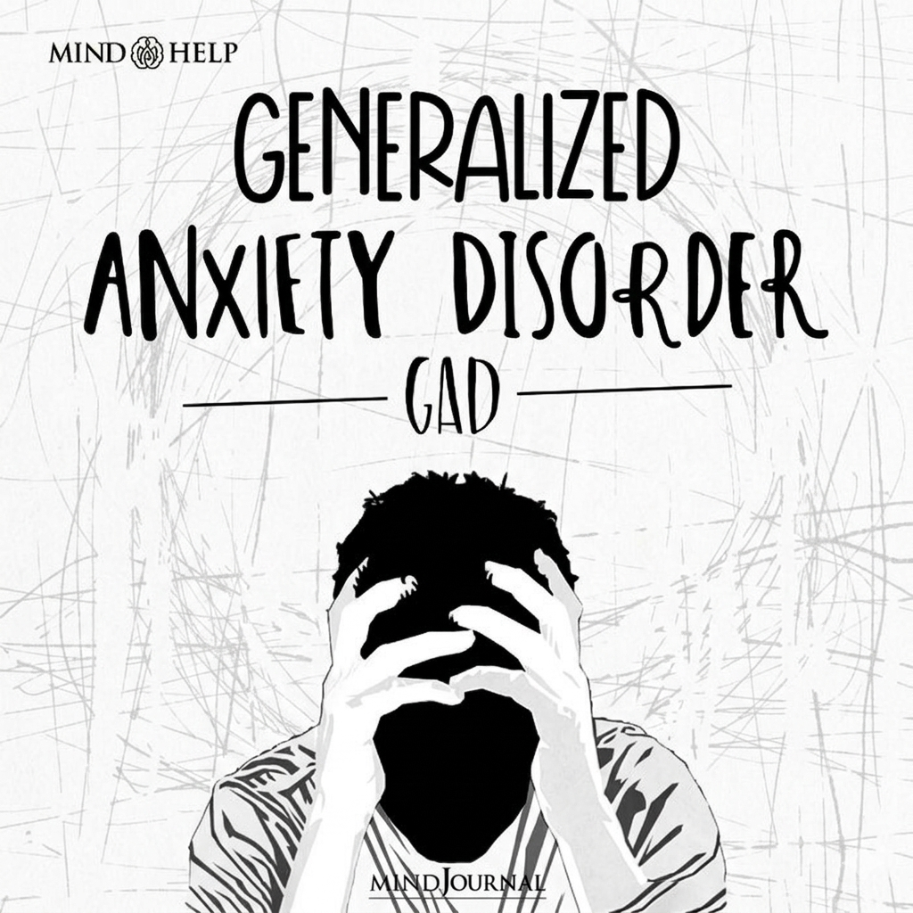

Question
Do you really think you're fine, MENTALLY ?
A presentation on mental health
01
Generalized
Anxiety Disorder
GAD
Generalized Anxiety Disorder, or GAD, is when a person feels worried all the time about normal, everyday things, even when there's no clear reason. This worry is hard to stop and can affect sleep, focus, and daily life. Anxiety itself is normal. It's the body's natural reaction to stress or danger. It helps us get ready to act quickly. But with GAD, this feeling happens most of the time, even when nothing is wrong. So the person feels nervous and tense almost all the time. This can be caused by stress, difficult experiences, or long periods of pressure.

Generalized Anxiety Disorder
1.5
Generalized
Anxiety Disorder
GAD Symptoms
People with GAD may have symptoms like too much thinking, trouble sleeping, fast heartbeat, feeling dizzy, being tired, and sometimes pain like headaches or stomachache.

Generalized Anxiety Disorder
02
Major Depressive
Disorder
MDD
AD doesn't just cause anxiety it can also lead to depression. Half of GAD patients end up dealing with both conditions together, which is called Comorbidity. On top of that, the constant worry pushes people to isolate themselves from others, known as Social Withdrawal.

Major Depressive Disorder
2.3
Major Depressive
Disorder
What is MDD?
Depression is more than just feeling sad. It's a long-lasting condition that drains your energy and affects every part of your life, from sleeping and eating to focusing and working. People with depression often feel empty, hopeless, and irritable even over small things, unlike normal sadness which fades on its own.

Major Depressive Disorder
2.6
Major Depressive
Disorder
MDD Treatment
What if We Didn't Treat Depression? Untreated depression can get worse and last longer, affecting studying, work, and relationships. It may cause physical problems like fatigue, trouble sleeping, and a weak immune system. In serious cases, it can lead to self-harm or suicide.

Major Depressive Disorder
03
Social Anxiety
Disorder
What is SAD?
Social Anxiety Disorder is a mental health condition where a person has a strong fear of being judged or embarrassed in social situations. It goes beyond normal shyness and can seriously impact school, work, and relationships.

Social Anxiety Disorder
3.5
Social Anxiety
Disorder
Symptoms, Effects & How to Face It
People with social anxiety feel strong fear before social events and overthink them after. They may experience physical symptoms like sweating, shaking, or a fast heartbeat. Over time, avoiding these situations lowers their confidence and affects daily life. However, facing fears gradually by taking small steps into social situations helps the mind get used to them, making fear weaker and confidence stronger.

Social Anxiety Disorder
04
PTSD
PTSD?
Imagine living a normal day… and suddenly, your mind takes you back to the worst moment of your life—like it's happening again."

PTSD
4.3
PTSD
What is PTSD?
is a condition that develops after experiencing or witnessing a traumatic event. It can be triggered by accidents, disasters, or even abusive relationships. The brain gets stuck in a constant state of alert, making it hard to feel safe, trust others, or form healthy relationships.

PTSD
4.6
PTSD
PTSD Symptoms
shows up in three main ways: reliving the trauma through flashbacks or nightmares, avoiding anything that reminds you of it, and feeling unable to relax. These symptoms can last for months or even years, deeply affecting daily life and relationships. PTSD is treatable. With the right support, people can regain control over their lives.

PTSD
A final word
Mental Health
Matters
Any Questions ?
Our Supercalifragilisticexpialidocious
Team

Abdelrahman Khaled
Programming

Noureddeen Hisham
Existing ✨

Ahmad Rageb
F.O.U.C.S.I.N.G

Hisham Aymen
Sleeping

Yahya Safwat
Gaming

Yasser Mohammed
Studying

Bassem Abdo
Overcoming